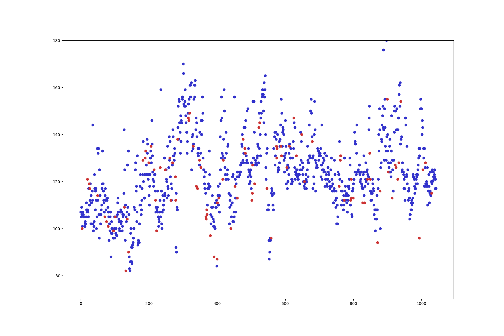

Project Results
My project achieved exactly what I set out to achieve. Given an input DEM with gap and/or missing data, my program returns a filled in DEM. Although on the surface these look a lot like the results from checkpoint two, I can assure you they are not. The program from checkpoint two has been revamped and is 1000x better. It runs faster and has a bunch of small improvements that I didn’t have time to discuss above.
Input Digital Elevation Model
Output Digital Elevation Model
Zoom in of Input Digital Elevation Model
Zoom in of Output Digital Elevation Model
For comparison’s sake, I re-ran my 1-dimensional tests on the new version of the Fourier approximation algorithm. Here are the results of my gap filling algorithm in one dimension:
One Dimensional Gap Filling
One of my hyperparameters for this program is the tolerance value for the sinusoid fitting. The tolerance defined how close the sine wave had to be to the data before the gradient descent would stop. To my surprise a lower tolerance (closer to zero) didn’t produce the best results. The above image and all of the images and tests use a tolerance of 0.01. Here is what it looked like when I set the tolerance to 0.000001. It looks like the data is being overfit.
One Dimensional Gap Filling with very low Tolerance
I also decided to run all my dropout tests again and was very happy with these results. My dropout tests in checkpoint two had extremely obvious sinusoidal patterns in the gap dropout. Due to all the updates I made to the algorithm, the output is a lot more representative of the input data and doesn’t produce glaring sinusoids anymore (except a little bit when most of the data is removed).
Uniformly Distributed One-Dimensional Dropout
Dropout Rate of 0%

Dropout Rate of 10%
Dropout Rate of 20%
Dropout Rate of 30%
Dropout Rate of 40%
Dropout Rate of 50%
Dropout Rate of 75%
Dropout Rate of 90%
Dropout Rate of 95%
Center Gap One-Dimensional Dropout

Dropout Rate of 0%
Dropout Rate of 10%
Dropout Rate of 20%
Dropout Rate of 30%
Dropout Rate of 40%

Dropout Rate of 50%
Dropout Rate of 75%
Dropout Rate of 90%
Dropout Rate of 95%
I then decided to create a two-dimensional dropout test. I was extremely surprised how well these worked for terrain data. I only tested random pixel dropout in two-dimensions (and not the gap dropout), but even with most of the pixels missing the overall shape still holds pretty well. For these tests I took a small square section of the Venus DEM with very few missing pixels.
Uniformly Distributed Two-Dimensional Dropout
Original Image
Input Image with Dropout Rate of 10%
Output Image with Dropout Rate of 10%
Input Image with Dropout Rate of 20%
Output Image with Dropout Rate of 20%
Input Image with Dropout Rate of 30%
Output Image with Dropout Rate of 30%
Input Image with Dropout Rate of 40%
Output Image with Dropout Rate of 40%
Input Image with Dropout Rate of 50%
Output Image with Dropout Rate of 50%
Input Image with Dropout Rate of 70%
Output Image with Dropout Rate of 70%

Input Image with Dropout Rate of 90%
Output Image with Dropout Rate of 90%